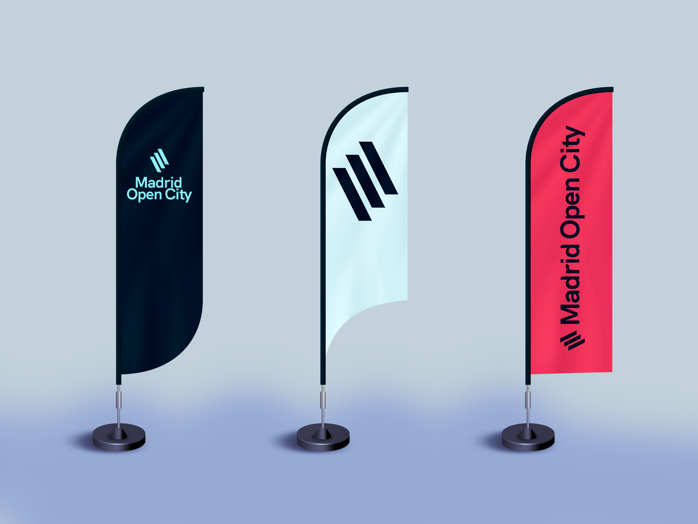
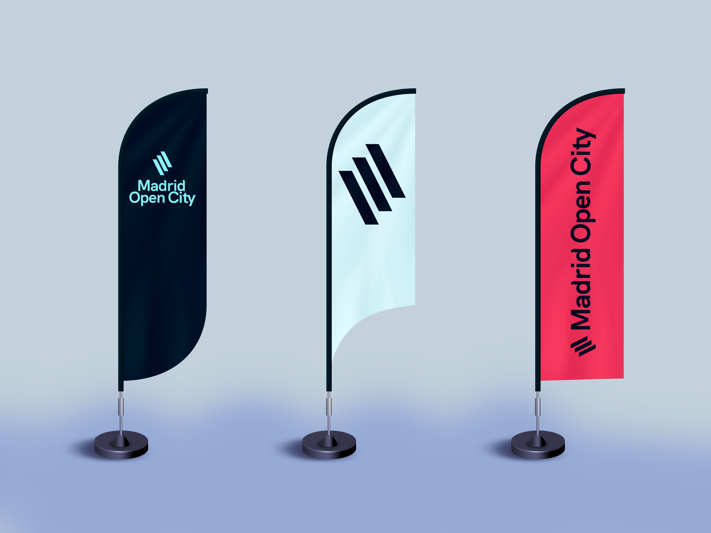

Aplicaciones impresas
Puesto que hablamos de una marca que ha de tener presencia a nivel global, la mayoría de aplicaciones serán digitales, sin embargo, aunque sean escasa, las aplicaciones impresas de la marca Madrid Open City son indispensables para ayudar a la marca a establecerse.
Las más importantes serán los elementos de papelería, las tarjetas de visita y los elementos para eventos, actos, etc.
Papelería
En la papelería el aspecto ha de ser sencillo para dar importancia al mensaje, por lo que simplemente se hará uso de las retículas establecidas en el apartado anterior situando el logo en la parte superior y sin demasiada presencia de color.
Todos los documentos oficiales de Madrid Open City se ajustarán a esta plantilla.
Tarjetas de visita
Las tarjetas de visita viajarán por todo el mundo y servirán para presentar a los trabajadores de la marca y a la propia marca. Se trata por ello de un elemento importante y toda la información debe quedar extremadamente clara. Por ello el diseño cuenta con los colores corporativos, el logo en ambos lados y toda la información que debe contener una tarjeta de visita (dirección, correo, teléfono...) claramente identificada.

Estas tarjetas serán la cara de presentación de la marca y sus empleados.
Elementos para eventos
Por otro lado es importante contar con abundantes aplicaciones para la identidad de la marca en los eventos, de nuevo es importante que la marca sea extremadamente visible, por lo que se hará uso de banderolas, stands, etc. Para todo ello se emplearán siempre los colores corporativos en las medidas ya establecidas.

 

Ejemplos de banderolas, stands e identificaciones para eventos.
Otras aplicaciones
Además de estas aplicaciones se podrá llegar a encontrar la marca en otras superficies, principalmente enfocadas a la publicidad y la promoción de la marca como puedan ser campañas de cartelería o de anuncios en revistas enfocadas al mundo de la economía y los negocios.